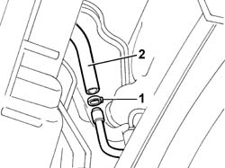
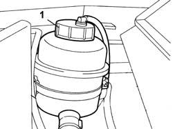

0010T70 POWER ASSISTED STEERING FLUID - Replace
- Path
- Procedures > 00 MAINTENANCE > 0010 NEW UNITS AND MAINTENANCE > 0010T vehicle oil and fluids > 0010T70 POWER ASSISTED STEERING FLUID - Replace
- Kind
- repair procedure (removal / refitting; the operation number is the code)
- Applies to
- all engines; all production periods
- Interactive page
- https://sloeber94.github.io/elrnDB-lThss/en/#/380798
Applies to: all engines; all production periods
See in Op. 7040D50 ENGINE COMPARTMENT UPPER SOUND INSULATION SHIELD - R.R.
- Position the vehicle on a lift.
See in Op. 7055B54 PROTECTION/GUARD under engine - R.R.
- Position a suitable container under the vehicle.
1. Raise the vehicle and disconnect the flexible hose from the rigid pipe and drain the power steering system.

Applies to: all engines; all production periods
- Connect the pipe.
- Lower the vehicle.
- Remove the plastic protection.
1. Refill the power steering system with the appropriate fluid to the MAX notch on the reservoir.
 | Description | Qty. | Component | Type | Classification |
|---|---|---|---|---|---|
. | TUTELA GI/A | 1.05 Litri | POWER ASSISTED STEERING CIRCUIT | Oil | - |
- Clean the power steering fluid filter thoroughly and replace in its housing in the reservoir, then close the plug.

Topics linked from this page (2)
- 7040D50 ENGINE COMPARTMENT UPPER SOUND INSULATION SHIELD - R.R.
- 7055B54 PROTECTION/GUARD under engine - R.R.
Topics that link to this page (10)
- 1004B17 POWER UNIT with automatic transmission, complete with support frame, front suspension- R.R. for versions with air conditioning
- 1004B18 POWER UNIT with manual gearbox, with front suspension subframe - R.R.
- 1020D26 Flywheel side oil seal COVER - R.R. and Replace seals
- 1020D39 Flywheel side OIL SEAL - Replace for versions with automatic transmission
- 1024B20 ENGINE FLYWHEEL - R&R for versions with automatic transmission
- 2130A10 AUTOMATIC TRANSMISSION - R.R.
- 2130B12 Automatic transmission TORQUE CONVERTER - R.R.
- 4130B20 POWER ASSISTED STEERING PUMP - R.R.
- 4130B94 DUPLEX PIPES from cooling coil or heat exchanger radiator - R.R.
- 4410D10 Front suspension FRAME - R.R.